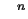

Alexander B. Aranson
Department of Mathematics
Keldysh Institute of Applied Mathematics
Miusskaja Square 4, Moscow 125047, Russia
gtrtp@glasnet.ru, aranson@spp.keldysh.ru

- its support. Truncated systems of equations is selected with respect to the boundary subsets of different polynomials contained in system. Among its solutions all first approximations to input system are present. The algorithm for obtaining of all truncated systems for given system of equations is suggested. It has realized as computer program.